0
pessoas atendidas pelo PEC
Resultados reais, transparência comprovada e histórias que inspiram.
Seu investimento financia diretamente as atividades de um jovem. Escolha onde quer gerar impacto:
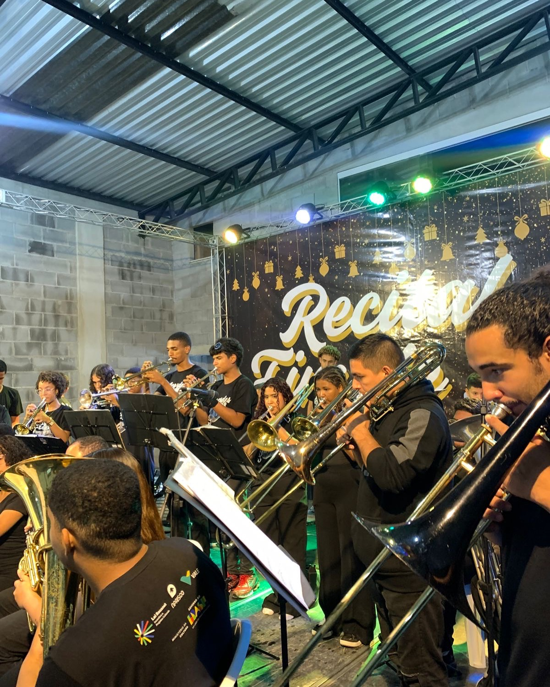
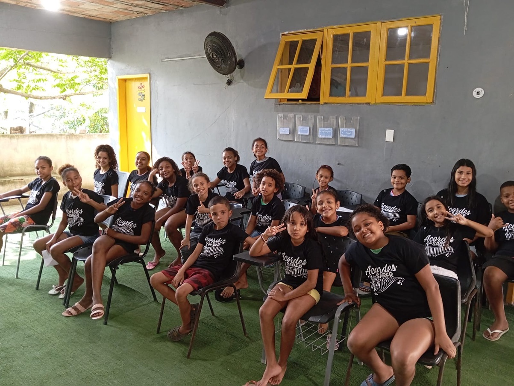
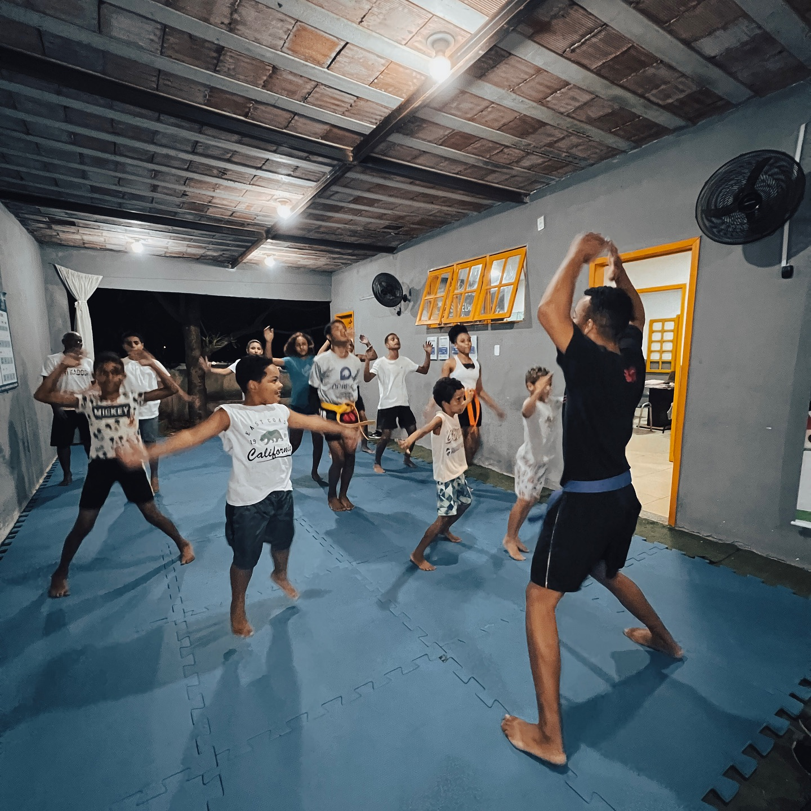
Cada doação é rastreável. Você recebe um relatório do impacto gerado pelo seu investimento. Transparência de ponta a ponta.
Além de dinheiro, precisamos de expertise. Se você tem uma habilidade que pode transformar a realidade de jovens em Itaguaí, queremos conversar.
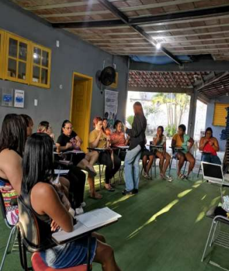
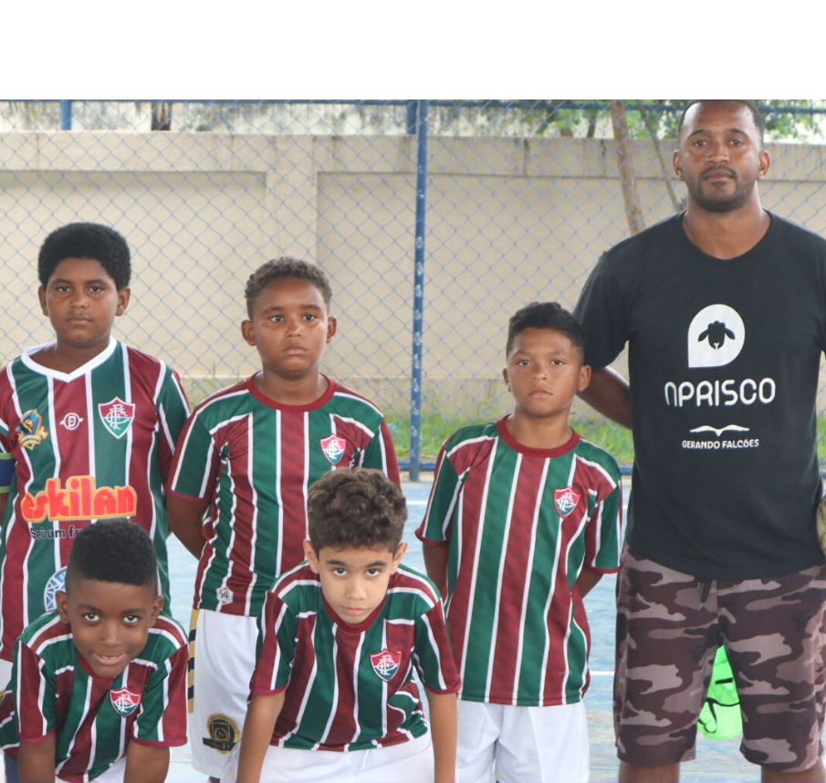
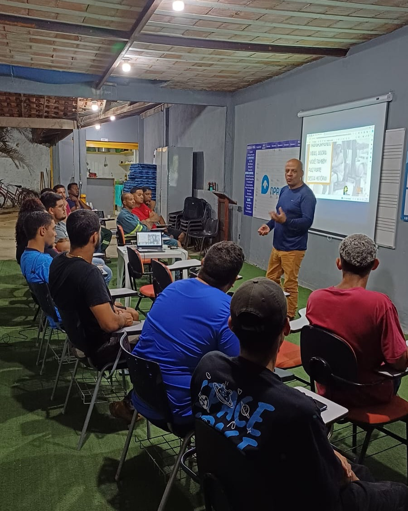
Impacto que não é medido não pode ser escalado. Por isso, publicamos anualmente nosso relatório completo de atividades — com números, histórias e indicadores que permitem que qualquer investidor avalie o retorno social do seu aporte.
pessoas atendidas pelo PEC
atendimentos (Polo PEC)
frequência no Polo PEC
oficinas oferecidas
formados no Polo QP
atendimentos no Polo QP
pessoas empregadas
refeições e lanches
cestas básicas doadas
famílias atendidas
comunidades atendidas
pessoas atendidas pelo PEC
atendimentos (Polo PEC)
frequência no Polo PEC
oficinas oferecidas
formados no Polo QP
atendimentos no Polo QP
pessoas empregadas
refeições e lanches
cestas básicas doadas
famílias atendidas
comunidades atendidas
auditoria Gerando Falcões
Por trás de cada número, existe uma trajetória real. Estas são algumas das histórias de quem investiu em si mesmo — e encontrou em O Aprisco a estrutura para isso.
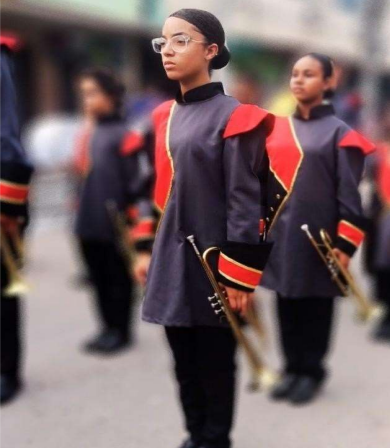
17 anos · Música
Em 2016, Eduarda chegou à Banda Commil sem nunca ter tocado um instrumento. Em menos de 10 anos, conquistou uma bolsa na Orquestra Chiquinha Gonzaga, participou de uma turnê internacional em Portugal e foi aprovada como bolsista da Banda Municipal de Itaguaí. O Morro do Sase chegou ao mundo através da sua música.
21 anos · Forças Armadas
Retornou às Forças Armadas como músico. A formação musical em O Aprisco foi o diferencial que abriu essa porta.
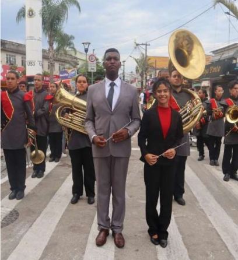
26 anos · Maestro
Ex-aluno e ex-maestro da Commil. Aprovado no concurso para instrutor municipal de música. A Commil não só formou seu talento — estruturou sua carreira.
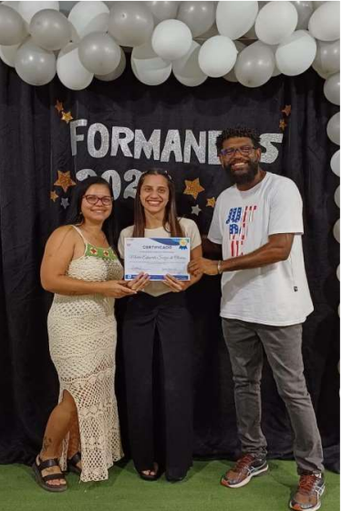
21 anos · Empreendedora
Aluna avançada da oficina de Crochê, hoje é fundadora do próprio negócio: Eduarda Crochê. O que começou como uma oficina de qualificação virou uma fonte de renda independente.
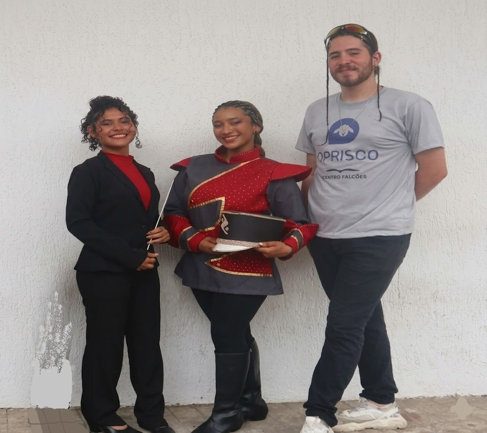
19 anos
19 anos
26 anos
Nossa maestrina Ana Clara, ex-aluna da Banda Commil, assumiu a regência da Orquestra em 2023 e recentemente foi aprovada no concurso para instrutora da Banda Municipal de Itaguaí. Da mesma forma, nossos talentosos coreógrafos, Caroline e André, que desenvolveram suas habilidades na Commil, também foram aprovados como instrutores de coreografia na Banda Municipal de Itaguaí.
Para grandes parceiros, transparência não é diferencial — é pré-requisito. Por isso, publicamos nossos relatórios de atividades, balanços financeiros e resultados auditados. Nossa estrutura foi desenvolvida para passar em auditorias corporativas e credenciar O Aprisco como destino seguro e estratégico para o investimento social de empresas.
O trabalho que entregamos é reconhecido por quem avalia com critério:
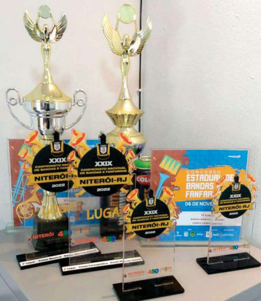